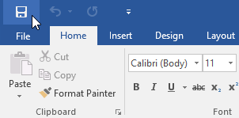
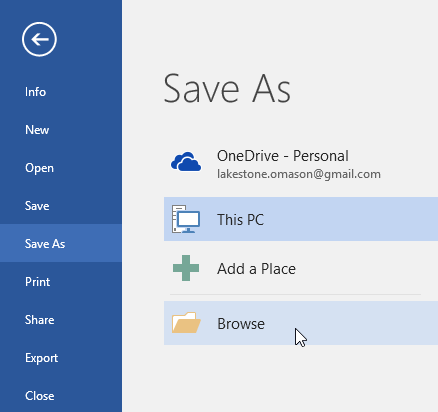
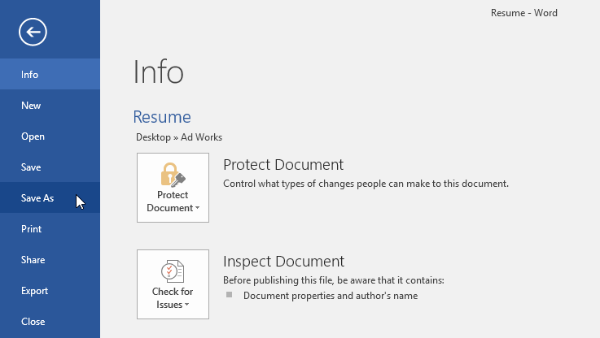
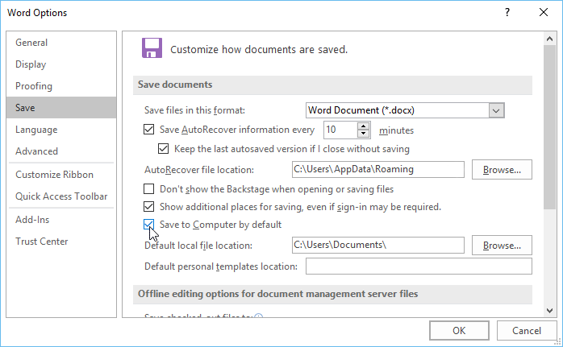
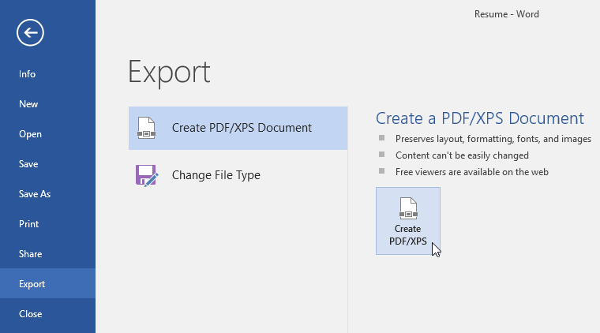
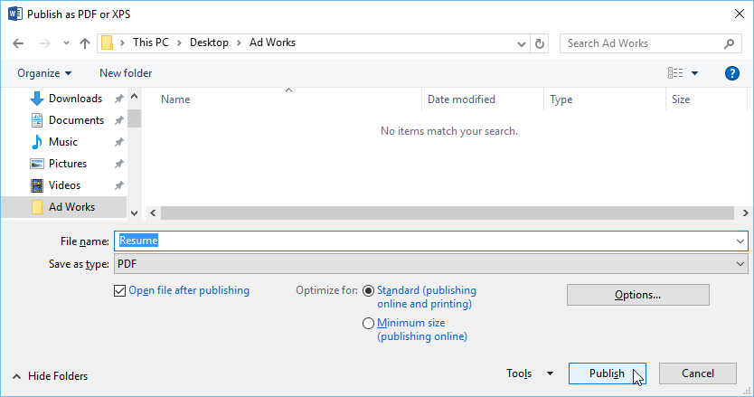
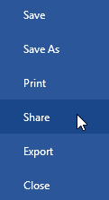
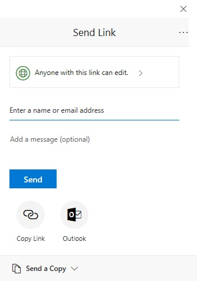

Introducere
Când creați un document nou în Word, va trebui să știți cum să-l salvați, astfel încât să îl puteți accesa și edita mai târziu. Ca și în versiunile anterioare de Word, puteți salva fișiere pe computer. Dacă preferați, puteți salva și fișiere în cloud folosind OneDrive. Puteți chiar să exportați și să partajați documente direct din Word.
Salvați și Salvați caWord oferă două moduri de a salva un fișier: Salvare și Salvare ca. Aceste opțiuni funcționează în moduri similare, cu câteva diferențe importante.
- Salvare: Când creați sau editați un document, veți folosi comanda Salvare pentru a salva modificările. Veți folosi această comandă de cele mai multe ori. Când salvați un fișier, va trebui să alegeți doar un nume și o locație pentru prima dată. După aceea, puteți face clic pe comanda Salvare pentru a o salva cu același nume și locație.
- Salvare ca: veți folosi această comandă pentru a crea o copie a unui document, păstrând în același timp originalul. Când utilizați Salvare ca, va trebui să alegeți un alt nume și/sau locație pentru versiunea copiată.
Majoritatea funcțiilor din Microsoft Office, inclusiv Word, sunt orientate spre salvarea și partajarea documentelor online. Acest lucru se face cu OneDrive, care este un spațiu de stocare online pentru documentele și fișierele dvs. Dacă doriți să utilizați OneDrive, asigurați-vă că sunteți conectat la Word cu contul Microsoft.
Pentru a salva un document:Este important să vă salvați documentul ori de câte ori începeți un proiect nou sau faceți modificări unuia existent. Economisirea devreme și des poate preveni pierderea muncii dumneavoastră. De asemenea, va trebui să acordați o atenție deosebită locului în care salvați documentul, astfel încât să fie ușor de găsit mai târziu.
- Găsiți și selectați comanda Salvare din bara de instrumente Acces rapid.
- Dacă salvați fișierul pentru prima dată, panoul Salvare ca va apărea în vizualizarea Backstage.
- Apoi, va trebui să alegeți unde să salvați fișierul și să îi dați un nume de fișier. Faceți clic pe Răsfoire pentru a selecta o locație pe computer. De asemenea, puteți face clic pe OneDrive pentru a salva fișierul pe OneDrive.
- Va apărea caseta de dialog Salvare ca. Selectați locația în care doriți să salvați documentul.
- Introduceți un nume de fișier pentru document, apoi faceți clic pe Salvare.
- Documentul va fi salvat. Puteți face clic din nou pe comanda Salvare pentru a salva modificările pe măsură ce modificați documentul.
- De asemenea, puteți accesa comanda Salvare apăsând Ctrl+S de pe tastatură.



Dacă doriți să salvați o versiune diferită a unui document, păstrând originalul, puteți crea o copie. De exemplu, dacă aveți un fișier numit Raport de vânzări, îl puteți salva ca Raport de vânzări 2, astfel încât să puteți edita noul fișier și să vă referiți în continuare la versiunea originală.
Pentru a face acest lucru, veți face clic pe comanda Salvare ca în vizualizarea Backstage. La fel ca atunci când salvați un fișier pentru prima dată, va trebui să alegeți unde să salvați fișierul și să îi dați un nou nume de fișier.

Pentru a schimba locația implicită de salvare:Dacă nu doriți să utilizați OneDrive, este posibil să fiți frustrat că OneDrive este selectat ca locație implicită la salvare. Dacă găsiți acest lucru incomod, puteți schimba locația implicită de salvare, astfel încât Acest computer să fie selectat în mod implicit.
- Faceți clic pe fila Fișier pentru a accesa vizualizarea în culise.
- Faceți clic pe Opțiuni.
- Va apărea caseta de dialog Opțiuni Word. Selectați Salvare din stânga, bifați caseta de lângă Salvare pe computer în mod implicit, apoi faceți clic pe OK. Locația implicită de salvare va fi schimbată.
.png)


Word vă salvează automat documentele într-un folder temporar în timp ce lucrați la ele. Dacă uitați să salvați modificările sau dacă Word se blochează, puteți restaura fișierul folosind AutoRecover.
Pentru a utiliza AutoRecover:- Deschideți Word. Dacă se găsesc versiuni salvate automat ale unui fișier, panoul Recuperare document va apărea în partea stângă
- Faceți clic pentru a deschide un fișier disponibil. Documentul va fi recuperat.

În mod implicit, Word salvează automat la fiecare 10 minute. Dacă editați un document pentru mai puțin de 10 minute, este posibil ca Word să nu creeze o versiune salvată automat.
Exportul documentelorÎn mod implicit, documentele Word sunt salvate în tipul de fișier .docx. Cu toate acestea, pot exista momente când trebuie să utilizați un alt tip de fișier, cum ar fi un document PDF sau Word 97-2003. Este ușor să exportați documentul dumneavoastră din Word într-o varietate de tipuri de fișiere.
Pentru a exporta un document ca fișier PDF:Exportarea documentului ca document Adobe Acrobat, cunoscut în mod obișnuit ca fișier PDF, poate fi utilă în special dacă partajați un document cu cineva care nu are Word. Un fișier PDF va face posibil ca destinatarii să vizualizeze, dar nu să editeze, conținutul documentului dvs.
- Faceți clic pe fila Fișier pentru a accesa vizualizarea Backstage, alegeți Export, apoi selectați Creare PDF/XPS.
- Va apărea caseta de dialog Salvare ca. Selectați locația în care doriți să exportați documentul, introduceți un nume de fișier, apoi faceți clic pe Publicare.


De asemenea, s-ar putea să vă fie util să exportați documentul în alte tipuri de fișiere, cum ar fi un document Word 97-2003, dacă trebuie să partajați cu persoane care folosesc o versiune mai veche a Word sau un fișier .txt dacă aveți nevoie de o versiune în text simplu a dvs. document.
- Faceți clic pe fila Fișier pentru a accesa vizualizarea în culise, alegeți Export, apoi selectați Schimbați tipul fișierului.
- Selectați un tip de fișier, apoi faceți clic pe Salvare ca.
- Va apărea caseta de dialog Salvare ca. Selectați locația în care doriți să exportați documentul, introduceți un nume de fișier, apoi faceți clic pe Salvare.
- De asemenea, puteți utiliza meniul derulant Salvare ca tip din caseta de dialog Salvare ca pentru a salva documente într-o varietate de tipuri de fișiere.


Word facilitează partajarea și colaborarea la documente folosind OneDrive. În trecut, dacă doreai să partajați un fișier cu cineva, îl puteți trimite ca atașament de e-mail. Deși convenabil, acest sistem creează și mai multe versiuni ale aceluiași fișier, care pot fi dificil de organizat.
Când partajați un document din Word, le oferiți altora acces la exact același fișier. Acest lucru vă permite dumneavoastră și persoanelor cărora le partajați să editați același document fără a fi nevoie să urmăriți mai multe versiuni.
Pentru a partaja un document:- Faceți clic pe fila Fișier pentru a accesa vizualizarea în culise, apoi faceți clic pe Partajare.
- Va apărea o fereastră Trimitere link.

